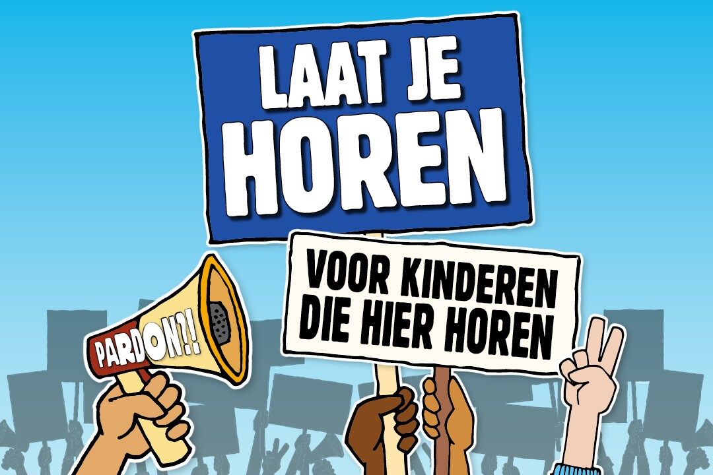
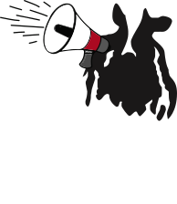

Ice Cream Sandwiches, the pop editie
Nodig je vrienden uit, verzamel iedereen en duik in deze Cookie Dough Sandwich Pops - bevroren, in chocolade gedipt, bedekt met sprinkles en gemaakt om met plezier te delen.
Meer lezen
400 kinderen wonen al jaren in Nederland, maar weten nog steeds niet of ze mogen blijven. Dat vinden wij ijskoud fout! Jij ook?
Kom in actie!Vind jouw dichtstbijzijnde supermarkt of laat Ben & Jerry's bezorgen door een restaurant of bezorgservice.
Vind nuWij spreken ons uit over onderwerpen die ons nauw aan het hart liggen. Ontdek hoe jij kunt helpen.
Ontdek meer over onze waardenNodig je vrienden uit, verzamel iedereen en duik in deze Cookie Dough Sandwich Pops - bevroren, in chocolade gedipt, bedekt met sprinkles en gemaakt om met plezier te delen.
Meer lezenDeze indulgente twist op Hong Kong-style French toast gevuld met chocolade, bak 'm goudbruin en rol het daarna door kaneelsuker voor een churro-inspired finish. Afgetopt met gecondenseerde melk, chocoladesaus en royale scoops Ben & Jerry's Churrifically Churros-y is dit een dessert dat groots is in comfort en nog groter in smaak.
Meer lezenBadkleding en swirls? Slippers en fudge chunks? Doe de quiz en ontdek welke Ben & Jerry's-smaak perfect past bij jouw zomerse vibe.
Meer lezenOnze ingrediënten worden met zorg uitgekozen en laten ons ijs (h)eerlijk smaken.
Ons doel is welvaart te creeren voor iedereen die verbonden is met ons bedrijf.
Onze missie en waardenWij spreken ons uit over onderwerpen die ons nauw aan het hart liggen. liggen.
Onderwerpen die wij belangrijk vinden